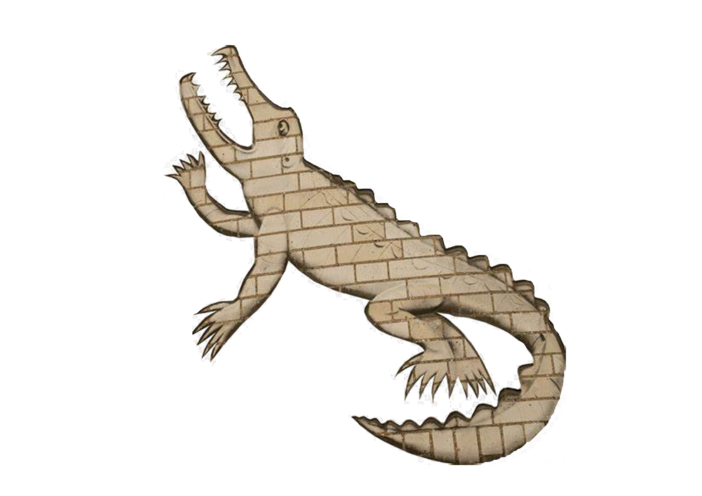
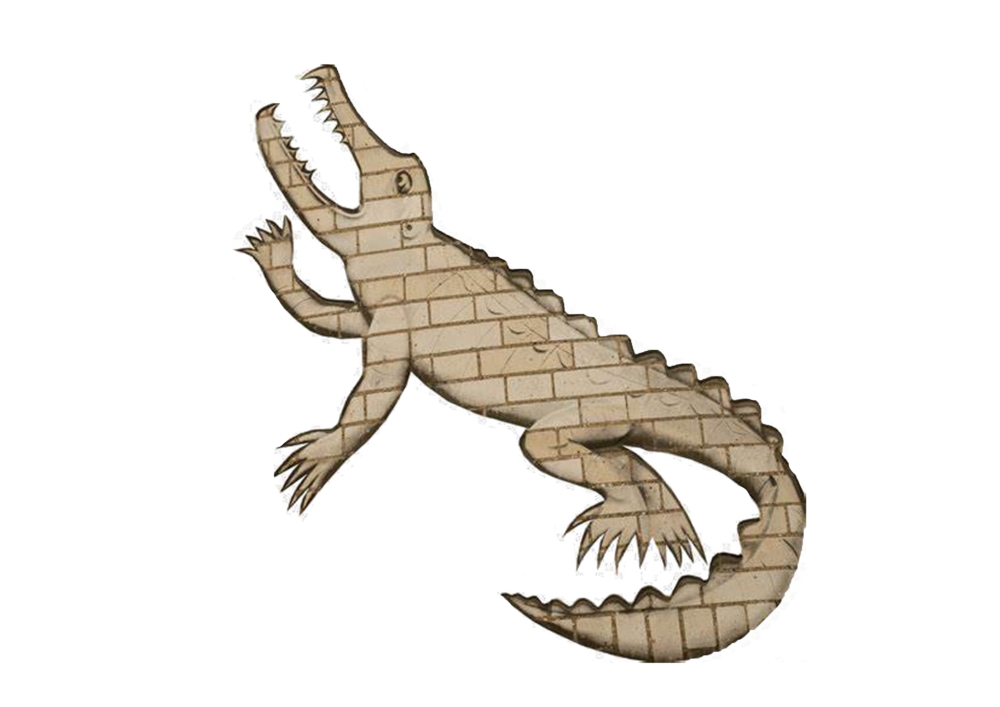

I am a Third Year Physics Student at the University of Cambridge aiming towards building a strong career. I look to develop quantitative skills (detailed in later sections), alongside Machine Learning capability and financial understanding towards a career in a quantitative role. I am consistently looking to buid those skills through computational projects, as well as wider reading (both listed below). Aside from academics, I spend time playing football, guitar, visiting chess clubs and hope to one day own a plant shop.
Projects are findable on my GitHub. But here is a brief overview of what I have been able to do in the short time I have had so far
- Built this! Fun and manageable as a first big HTML and JS project.
- Built Girton College FC a website. This allows open submissions of past memories and photos to be displayed throughout years, as well as providing fixture and squad updates.
- Built a simple tranformer as first ML project
- Constructed and trained a basic CNN to recognise faces from other objects with an F-score of x.
- Compiled a python program connected to an ardino to used as a visual alert within my room, to warn for diary events and train delays
 
